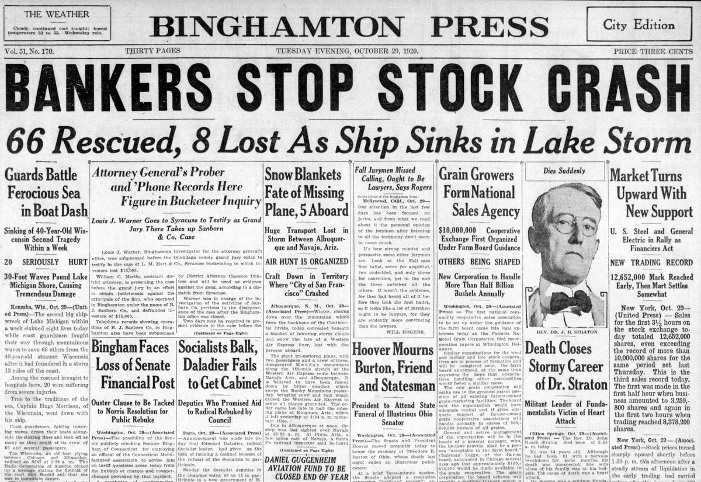

The Timeless Appeal of Print-Style Journalism
By Jane Doe – March 9, 2025
In an era dominated by digital content, the charm of print-style journalism remains undeniable. The structured layouts, carefully crafted headlines, and immersive reading experiences continue to draw in readers who appreciate the art of storytelling.
While many media outlets have transitioned to click-driven models, some publications still uphold the traditions of investigative journalism, long-form narratives, and editorial integrity. These elements have kept the essence of print alive even in an online world.
“There’s something special about holding a well-written piece in your hands, feeling the texture of the paper, and turning each page with anticipation.” – Media Historian, Emily Carter
Modern blogs and online platforms are now taking inspiration from classic newspaper designs, blending the best of both worlds. With carefully selected typography, justified text, and minimal distractions, digital articles can offer an experience reminiscent of the golden age of print.